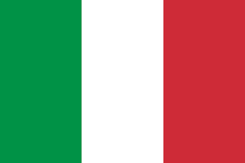
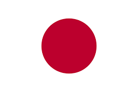
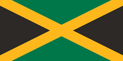
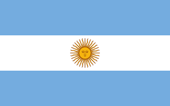
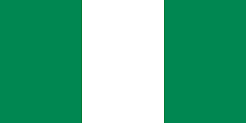
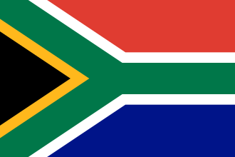

¿De qué se trató el Mundial de 1998?
La Copa Mundial de la FIFA 1998 fue la decimosexta edición del torneo y se disputó en Francia entre el 10 de junio y el 12 de julio de 1998. Esta cita marcó el regreso del torneo a tierras galas tras 60 años, convirtiendo a Francia en el tercer país en organizar dos veces una Copa del Mundo. El evento estuvo impregnado de una atmósfera de multiculturalidad, orgullo republicano y vanguardia tecnológica, consolidando la era de la globalización televisiva e industrial a las puertas del nuevo milenio.
El campeonato estuvo marcado por hitos institucionales de gran relevancia histórica. Se continuó utilizando el trofeo oficial estrenado en 1974: la Copa Mundial de la FIFA, diseñada por Silvio Gazzaniga. A nivel deportivo, el certamen introdujo por primera vez la regla del "Gol de Oro" durante las prórrogas y la obligatoriedad de que los cuartos árbitros utilizaran tableros electrónicos luminosos para los cambios y el tiempo añadido. En el plano organizativo, el torneo vivió la mayor revolución estructural de su historia moderna al expandir definitivamente el cupo de participantes de 24 a 32 selecciones, configurando el formato de 8 grupos de 4 equipos que redefinió el mapa comercial del fútbol.
Francia organizó un certamen de máximo nivel logístico, coronado por la construcción del colosal Stade de France en Saint-Denis. En el plano futbolístico, la selección anfitriona, dirigida por Aimé Jacquet y liderada en el campo por un excelso Zinedine Zidane, demostró una solidez defensiva impenetrable y un despliegue colectivo magistral. En la gran final, disputada ante unos 80.000 espectadores, Francia aplastó a la campeona defensora, Brasil, por un contundente 3-0 gracias a dos goles de cabeza de Zidane y uno agónico de Emmanuel Petit.
Informacion que tenes que saber
Info general
- Pais Anfitrion: Francia
- Fecha de Inicio:
10 de Junio de 1998
(10/06/1998) - Fecha de Finalizacion:
12 de Julio de 1998
(12/07/1998) - Duracion: 32 dias
- Organizador: FIFA
- Edicion: XVI
Estadisticas
- Partidos jugados: 64
- Goles anotados: 171
- Promedio de gol: 2,67 por partido
- Máximo goleador:
Davor Šuker (Croacia)
(6 goles) - Final:
Francia 3 - 0 Brasil
info de la Ciudad
- Ciudades Sede: 10
- Selecciones Participantes: 32 (Primera edición con este formato extendido)
- Estadios Utilizados: 10
- Estadio Principal:
Stade de France (Saint-Denis/París) - Asistencia total:
2.785.100 espectadores
Podio
| Posicion | Seleccion | Bandera |
|---|---|---|
| 1º Puesto | Francia |  |
| 2º Puesto | Brasil |  |
| 3º Puesto | Croacia |  |
| 4º Puesto | Países Bajos |  |
(Nota: El tercer puesto se definió en un partido entre Croacia y Países Bajos. Croacia venció 2-1 al combinado neerlandés, con Davor Šuker anotando el gol decisivo para conquistar el bronce en su debut mundialista como nación independiente).
Historia completa de la Copa Mundial de la FIFA 1998
La FIFA designó a Francia como sede en 1992 tras superar en la votación a la candidatura de Marruecos. El torneo significó el debut de un formato ampliado a 32 selecciones, diseñado por el presidente de la FIFA, João Havelange, para dar mayor representación a los continentes de África, Asia y la CONCACAF. La cita de 1998 vio nacer futbolísticamente a la espectacular Croacia post-yugoslava, que maravilló al mundo al alcanzar el tercer puesto en su primera participación independiente. También debutaron naciones como Jamaica (los "Reggae Boyz"), Japón, Sudáfrica y la República Federal de Yugoslavia.
La fase de grupos arrancó con partidos de altísimo voltaje. Uno de los choques más cargados de tensión geopolítica de la historia del deporte se dio en Lyon, donde Estados Unidos e Irán se enfrentaron en un clima de paz, intercambiando flores blancas antes de que los iraníes se llevaran el triunfo por 2-1. Argentina e Inglaterra revivieron su clásico histórico en los octavos de final en Saint-Étienne, un partido memorable que incluyó un golazo antológico del joven Michael Owen de 18 años, la polémica expulsión de David Beckham por una patada a Diego Simeone, y la clasificación argentina en los penaltis gracias a las paradas de Carlos Roa.
Desarrollo del torneo
Los cuartos de final vieron la instauración del dramatismo puro: el francés Laurent Blanc anotó ante Paraguay el primer "Gol de Oro" en la historia de los mundiales para clasificar a los galos en la prórroga. Paralelamente, la campeona defensora, Brasil, sufría para avanzar eliminando a Dinamarca (3-2) y requiriendo de los penaltis para batir a unos Países Bajos memorables liderados por Dennis Bergkamp en semifinales. Francia, por su parte, avanzó a la final tras vencer a la sorprendente Croacia por 2-1 merced a dos goles inesperados del lateral Lilian Thuram.
La gran final
La gran final del 12 de julio en el Stade de France estuvo rodeada de un misterio médico que paralizó al planeta. Horas antes del partido, la estrella brasileña Ronaldo sufrió convulsiones en el hotel de concentración. Inicialmente retirado de la alineación oficial, fue reincorporado a minutos del pitido inicial debido a las presiones comerciales y deportivas. En la cancha, Brasil lució errática, temerosa y completamente desdibujada.
Francia aprovechó el momento de forma implacable: Zinedine Zidane se elevó en dos tiros de esquina en la primera mitad para marcar dos goles calcados de cabeza, y Emmanuel Petit selló el 3-0 en el minuto 93, jugando con un hombre menos tras la expulsión de Marcel Desailly. Francia tocaba el cielo con las manos bajo el firmamento de París.
Francia consiguió así su primer campeonato mundial, rompiendo el maleficio histórico y desatando una fiesta histórica de unidad nacional en los Campos Elíseos bajo el lema de la generación "Black, Blanc, Beur" (Negra, Blanca y Magrebí).
⚽ Pelota Oficial del Mundial 1998

ADIDAS TRICOLORE
El Tricolore fue el balón oficial de la Copa Mundial de la FIFA Francia 1998, fabricado por la firma alemana Adidas. Su nombre homenajeaba la bandera tricolor francesa, convirtiéndose en el primer balón de color en la historia de los mundiales, rompiendo décadas de diseños monocromáticos en blanco y negro.
Información General
Nombre: Adidas Tricolore
Fabricante: Adidas (Alemania)
Material: Capa avanzada de "espuma sintáctica" con microesferas llenas de gas altamente resistentes
Diseño: Colores azul, blanco y rojo de la bandera francesa con motivos de la herencia gala, como las colas estilizadas de un gallo
Torneo: Copa Mundial FIFA Francia 1998
Características
- Primer balón de color en la historia de los mundiales.
- La capa de espuma sintáctica le otorgaba una distribución del aire perfecta y una durabilidad sin precedentes.
- Alcanzaba una velocidad de salida que revolucionó los disparos de larga distancia.
- Su diseño incorporaba los colores de la bandera francesa entrelazados con motivos de la herencia gala.
- Representó un salto tecnológico y estético significativo respecto al Questra de 1994.
Dato curioso
El Tricolore fue el primer balón mundialista completamente coloreado de la historia. Su innovadora capa de espuma sintáctica con microesferas de gas sorprendió a los porteros de todo el mundo con su velocidad y trayectorias impredecibles, especialmente en los tiros libres de larga distancia.
Selecciones Participantes
Europa
 Alemania
Alemania  Austria
Austria  Bélgica
Bélgica  Bulgaria Croacia
Bulgaria Croacia  Escocia
Escocia  España Francia (Anfitrión)
España Francia (Anfitrión)  Inglaterra
Inglaterra 
Italia Países Bajos  Noruega
Noruega  Rumania
Rumania  Yugoslavia
Yugoslavia  Dinamarca
Dinamarca Debutantes notables
Croacia 
Japón
JamaicaSudamérica

Argentina Brasil (Vigente campeón)  Chile
Chile  Colombia
Colombia  Paraguay
Paraguay Norteamérica, Centroamérica y Caribe
 Estados Unidos
Estados Unidos  México
México Asia
 Arabia Saudita
Arabia Saudita  Corea del Sur
Corea del Sur  Irán
Irán África
 Camerún
Camerún  Marruecos
Marruecos 
Nigeria
Sudáfrica Túnez
Túnez
Sedes |
||||
|---|---|---|---|---|
|
El Mundial de 1998 se disputó en diez ciudades sede y diez estadios, todos ellos adaptados o construidos para ofrecer el máximo nivel de confort y tecnología al servicio del espectáculo futbolístico. El Stade de France de Saint-Denis, en París, fue la sede principal del torneo, albergando la gran final entre Francia y Brasil ante cerca de 80.000 espectadores. Marsella, Lyon, Lens, Nantes, Toulouse, Saint-Étienne, Burdeos, Montpellier y el Parque de los Príncipes de París completaron el mapa de ciudades anfitrionas. En total se jugaron 64 partidos repartidos entre los diez estadios, con una asistencia total de 2.785.100 espectadores a lo largo de todo el campeonato. |
||||
| Nombre del Estadio | Ciudad | Capacidad aprox. | Partidos Jugados | |
Stade de France |
Saint-Denis (París) | 80.000 | 9 | |
Estadio Vélodrome |
Marsella | 60.000 | 7 | |
Parque de los Príncipes |
París | 48.800 | 6 | |
Estadio de Gerland |
Lyon | 44.000 | 6 | |
Estadio Félix Bollaert |
Lens | 41.300 | 6 | |
Estadio de la Beaujoire |
Nantes | 39.500 | 6 | |
Estadio Municipal |
Toulouse | 36.500 | 6 | |
Estadio Geoffroy-Guichard |
Saint-Étienne | 35.600 | 6 | |
Estadio Parc Lescure (Chaban-Delmas) |
Burdeos | 34.600 | 6 | |
Estadio de la Mosson |
Montpellier | 32.900 | 6 | |
Arbitros de la Copa Mundial de la FIFA 1998 por pais
| Arbitros | Pais |
|---|---|
| Said Belqola (Árbitro de la final — Primer africano en dirigirla) | |
| Javier Castrilli | |
| Arturo Brizio Carter | |
| Epifanio González | |
| Jorge Larrionda |  |
| Pierluigi Collina | |
| Hugh Dallas | |
| Hellmut Krug | |
| Marc Batta | |
| Leif Sundell |  |
| Mario van der Ende | |
| Esfandiar Baharmast | |
| Ali Bujsaim |  |
| Masayoshi Okada | |
| Gamal Al-Ghandour |  |
Resumen del torneo — Copa Mundial de la FIFA 1998
Primera Fase de Grupos
Grupo A
- Brasil
- Noruega
- Marruecos
- Escocia
Brasil clasificó como favorito junto a una sorpresiva Noruega. Escocia y Marruecos quedaron eliminados en fase de grupos.
Grupo B
- Italia
- Chile
- Camerún
- Austria
Italia clasificó primera con solidez. Chile acompañó a los azzurri. Camerún y Austria quedaron fuera en la fase inicial.
Grupo C
- Francia
- Dinamarca
- Sudáfrica
- Arabia Saudita
Francia dominó su grupo como anfitrión, aunque Zidane fue expulsado ante Arabia Saudita. Dinamarca clasificó segunda.
Grupo D
- Nigeria
- Paraguay
- España
- Bulgaria
Nigeria ganó el grupo con autoridad. Paraguay y España también clasificaron, dejando a Bulgaria fuera del torneo.
Grupo E
- Países Bajos
- México
- Bélgica
- Corea del Sur
Países Bajos fue el dominador del grupo con un gran nivel colectivo. México clasificó segundo. Bélgica y Corea del Sur se fueron a casa.
Grupo F
- Alemania
- Yugoslavia
- Irán
- Estados Unidos
Irán
2:1
Estados Unidos
Uno de los partidos más cargados de tensión política de la historia mundialista. Irán venció 2-1 a Estados Unidos en un encuentro que comenzó con el intercambio de flores blancas entre los jugadores.
Grupo G
- Rumania
- Inglaterra
- Colombia
- Túnez
Rumania clasificó primera del grupo con solidez. Inglaterra avanzó segunda. Colombia y Túnez quedaron eliminados.
Grupo H
- Argentina
- Croacia
- Japón
- Jamaica
Argentina dominó el grupo con autoridad. Croacia reveló todo su potencial clasificando segunda. Japón y Jamaica, en su debut mundialista, quedaron eliminados.
Fase de Eliminación Directa
Octavos de Final
- Brasil 4 - 1 Chile
- Noruega 1 - 1 Italia (Noruega clasificó por puntos en grupo... Italia clasificó por regulación: Italia ganó 1-0)
- Francia 1 - 0 Paraguay (Gol de Oro de Laurent Blanc)
- Dinamarca 4 - 1 Nigeria
- Países Bajos 2 - 1 Yugoslavia
- Alemania 2 - 1 México
- Argentina 2 - 2 Inglaterra (Argentina 4-3 pen.)
- Croacia 1 - 0 Rumania
Inglaterra
Un partido memorable que incluyó un golazo antológico del joven Michael Owen de 18 años, la polémica expulsión de David Beckham por una patada a Diego Simeone, y la clasificación argentina en los penaltis gracias a las paradas de Carlos Roa.
Cuartos de Final
- Francia 0 - 0 Italia (Francia 4-3 pen.)
- Brasil 3 - 2 Dinamarca
- Países Bajos 2 - 1 Argentina
- Alemania 0 - 3 Croacia
Croacia protagonizó la mayor sorpresa de los cuartos al golear a Alemania 3-0 en Lyon, con un hat-trick de Davor Šuker. Francia superó a Italia en los penaltis en un duelo táctico de altísimo nivel.
Semifinales
Semifinal 1
Brasil
1:1
Países Bajos
Brasil y Países Bajos protagonizaron un épico duelo que se resolvió en la tanda de penaltis. El portero brasileño Taffarel fue el héroe parando dos lanzamientos neerlandeses.
Semifinal 2
Francia
2:1
Croacia
El lateral Lilian Thuram se convirtió en el héroe inesperado de Francia anotando los dos goles del triunfo, los únicos de su carrera internacional. Šuker anotó para Croacia pero no pudo evitar la eliminación de la gran cenicienta del torneo.
Partido por el Tercer Puesto
Croacia y Países Bajos disputaron el partido por el tercer y cuarto puesto, tras ser eliminados en sus respectivas semifinales.
Croacia
2-1
Países Bajos
Gran Final
Finalistas
Francia Grupo C Brasil Grupo AFinal
Francia 3 Brasil 0(Goles de Zinedine Zidane x2 (cabeza, 27' y 45') y Emmanuel Petit (93'). Marcel Desailly fue expulsado para Francia en el minuto 68. El misterio médico de Ronaldo marcó el partido.)
Máximos goleadores — Copa Mundial de la FIFA 1998
| Jugador | Goles | Pais |
|---|---|---|
| Davor Šuker | 6 | |
| Gabriel Batistuta | 5 | |
| Christian Vieri | 5 | |
| Ronaldo | 4 | |
| Marcelo Salas | 4 | |
| Luis Hernández | 4 | |
Equipo estelar — Copa Mundial de la FIFA 1998
Elegido por el Grupo de Estudios Técnicos de la FIFA, el equipo ideal reflejó el dominio colectivo de Francia, campeona del mundo, y el gran nivel individual mostrado por jugadores de Brasil, Países Bajos, Croacia y Dinamarca.
| Jugador | Posición | Pais |
|---|---|---|
| Fabien Barthez | Portero | |
| José Luis Chilavert | Portero | |
| Roberto Carlos | Defensa | |
| Marcel Desailly | Defensa | |
| Lilian Thuram | Defensa | |
| Frank de Boer | Defensa | |
| Carlos Gamarra | Defensa | |
| Dunga | Mediocampista | |
| Rivaldo | Mediocampista | |
| Zinedine Zidane | Mediocampista | |
| Michael Laudrup | Mediocampista | |
| Edgar Davids | Mediocampista | |
| Ronaldo | Delantero | |
| Davor Šuker | Delantero | |
| Brian Laudrup | Delantero | |
| Dennis Bergkamp | Delantero | |
Premios Oficiales — Copa Mundial de la FIFA 1998
| Premio | Jugador | Pais |
|---|---|---|
| 🥇 Mejor Jugador (Balón de Oro) | Ronaldo | |
| ⚽ Ganador de la Bota de Oro | Davor Šuker | |
| 🧤 Mejor Portero (Premio Lev Yashin) | Fabien Barthez | |
| 👶 Mejor Jugador Joven | Michael Owen | |
| 🤝 Premio Fair Play (compartido) | Selección de Francia | |
| 🤝 Premio Fair Play (compartido) | Selección de Inglaterra | |
Controversias de la Copa Mundial de la FIFA 1998
Esta edición cerró el siglo envuelta en debates médicos masivos, incidentes de violencia civil y roces políticos internacionales.
-
El misterio médico de Ronaldo
El misterio médico que rodeó a Ronaldo Nazário en las horas previas a la final sigue siendo una de las mayores controversias de la historia del deporte. El jugador sufrió convulsiones estomacales y temblores en su habitación, siendo trasladado de urgencia a una clínica parisina. Tras recibir el alta médica bajo extrañas circunstancias, y ante la inmensa presión de la marca deportiva patrocinadora del equipo (Nike) y los directivos brasileños, fue incluido a última hora en el once inicial. Ronaldo vagó por la cancha completamente desorientado, lo que motivó investigaciones del propio Congreso de Brasil en los años posteriores.
-
Violencia de hooligans en Marsella y el ataque de Lens
El torneo se vio empañado por la violencia de los hooligans ingleses en las calles de Marsella previo al partido contra Túnez, provocando destrozos masivos en comercios locales. Sin embargo, el hecho más trágico ocurrió en Lens, donde un grupo de neonazis alemanes agredió brutalmente al gendarme francés Daniel Nivel, dejándolo en coma permanente con graves daños cerebrales, un suceso que conmocionó a la delegación alemana y a la FIFA.
-
El récord de tarjetas rojas y el rigorismo arbitral
El severo mandato de la FIFA de expulsar de forma directa cualquier entrada por detrás causó estragos en el desarrollo de los partidos. El torneo registró la cifra récord de 22 tarjetas rojas, muchas de ellas calificadas por la prensa internacional como exageradas o rigoristas, incluyendo la expulsión de la estrella francesa Zinedine Zidane ante Arabia Saudita por pisar intencionadamente a un rival.
-
La expulsión de David Beckham
La tarjeta roja mostrada a David Beckham en el partido Argentina-Inglaterra, por una patada a Diego Simeone, lo convirtió en el enemigo público número uno de Inglaterra durante meses. El incidente marcó profundamente la carrera del jugador inglés y generó un enorme debate sobre el uso de las expulsiones como herramienta de presión psicológica en el fútbol moderno.
Identidad del Torneo: Diseño, Marketing, Medios y Legado
Mascota Oficial: "Footix"
Creado por el diseñador gráfico Fabrice Pialot, la mascota fue un gallo antropomórfico, el animal nacional tradicional de Francia. Tenía el cuerpo de un azul rey brillante, el pico amarillo y las plumas de la cola rojas, portando las palabras "FRANCE 98" en el pecho mientras sostenía el balón Tricolore.
Su nombre combinaba la palabra "football" con el sufijo "-ix", un guiño directo a los cómics de Asterix el Galo. Footix se convirtió en un éxito rotundo en Europa, generando un impacto masivo en videojuegos, papelería y líneas de ropa deportiva, siendo considerada una de las mascotas más icónicas y rentables de la historia de la FIFA.
Canción Oficial: "La Copa de la Vida"
Interpretada por el astro puertorriqueño Ricky Martin. Con su ritmo de candombe, pop latino y percusiones explosivas, el tema se convirtió en un fenómeno sociocultural global absoluto. Su estribillo "¡Ale, ale, ale!" redefinió la identidad musical del torneo, superando al himno oficial instrumental ("La Cour des Grands" de Youssou N'Dour y Axelle Red) y marcando la pauta para los futuros himnos mundialistas.
Logotipo Oficial
El emblema oficial combinó la simplicidad lineal con la identidad nacional. Mostraba un balón de fútbol tradicional de la FIFA "saliendo" del horizonte terrestre, donde la curvatura del planeta estaba pintada con los colores azul, blanco y rojo de la bandera francesa, coronado arriba por el año "98".
La Revolución de la Inauguración
La inauguración de Francia 1998 no se limitó a un show dentro de la cancha; transformó por completo las calles de París el 9 de junio, un día antes del partido inaugural. Inspirado en el teatro callejero de vanguardia, el evento principal consistió en el desfile de cuatro figuras humanoides mecánicas gigantes (de más de 20 metros de altura) llamadas "Los Gigantes", que representaban a las diferentes razas del planeta y cruzaron la ciudad desde distintas puertas históricas hasta encontrarse en la Plaza de la Concordia, simbolizando la unión universal a través del fútbol.
La ceremonia previa al primer partido, en el Stade de France, transformó el césped en un gigantesco jardín de flores multicolores donde cientos de bailarines desplegaron coreografías contemporáneas inspiradas en la naturaleza y la diversidad cultural. El evento proyectó una imagen de elegancia, sofisticación y orgullo francés que dejó atrás el enfoque puramente pop del mundial estadounidense.
Televisión y Avances en la Cobertura
Francia 1998 fue el primer mundial transmitido de manera masiva en formato de pantalla ancha (16:9) y con sonido estéreo digital optimizado para sistemas de cine en casa. La FIFA introdujo cámaras flotantes "Spidercam" suspendidas por cables en los estadios principales y perfeccionó los gráficos virtuales en tiempo real para analizar los fueras de juego. El torneo alcanzó una audiencia acumulada superior a los 40.000 millones de espectadores en todo el planeta, consolidando los derechos de televisión como la principal mina de oro del deporte mundial.
El Legado del Torneo
El certamen dejó un legado transformador: consolidó el formato de 32 selecciones que rige hasta hoy, instauró el "Gol de Oro" como regla de eliminación directa, convirtió la Copa del Mundo en el evento televisivo más grande del planeta con más de 40.000 millones de espectadores acumulados, y consagró a Francia como potencia mundial del fútbol bajo el símbolo de la generación "Black, Blanc, Beur", un poderoso mensaje de unidad multicultural que trascendió el deporte.
Tabla de Rendimiento y Posiciones Finales
| Posicion | Seleccion | Pts | PJ | PG | PE | PP | GF | GC | Dif | Rendimiento |
|---|---|---|---|---|---|---|---|---|---|---|
| 1 | Francia |
19 | 7 | 6 | 1 | 0 | 15 | 2 | 13 | 90,5% |
| 2 | Brasil |
13 | 7 | 4 | 1 | 2 | 14 | 10 | 4 | 61,9% |
| 3 | Croacia |
15 | 7 | 5 | 0 | 2 | 11 | 5 | 6 | 71,4% |
| 4 | Países Bajos |
12 | 7 | 3 | 3 | 1 | 13 | 7 | 6 | 57,1% |
| 5 | Italia | 11 | 5 | 3 | 2 | 0 | 8 | 3 | 5 | 73,3% |
| 6 | Argentina | 10 | 5 | 3 | 1 | 1 | 10 | 4 | 6 | 66,7% |
| 7 | Alemania |
10 | 5 | 3 | 1 | 1 | 8 | 6 | 2 | 66,7% |
| 8 | Dinamarca |
7 | 5 | 2 | 1 | 2 | 9 | 7 | 2 | 46,7% |
| 9 | Inglaterra |
7 | 4 | 2 | 1 | 1 | 7 | 4 | 3 | 58,3% |
| 10 | R. F. Yugoslavia |
7 | 4 | 2 | 1 | 1 | 5 | 4 | 1 | 58,3% |
| 11 | Rumania |
7 | 4 | 2 | 1 | 1 | 4 | 3 | 1 | 58,3% |
| 12 | Nigeria | 6 | 4 | 2 | 0 | 2 | 6 | 9 | -3 | 50,0% |
| 13 | México |
5 | 4 | 1 | 2 | 1 | 8 | 7 | 1 | 41,7% |
| 14 | Paraguay |
5 | 4 | 1 | 2 | 1 | 3 | 2 | 1 | 41,7% |
| 15 | Noruega |
5 | 4 | 1 | 2 | 1 | 5 | 5 | 0 | 41,7% |
| 16 | Chile |
3 | 4 | 0 | 3 | 1 | 5 | 8 | -3 | 25,0% |
| 17 | España |
4 | 3 | 1 | 1 | 1 | 8 | 4 | 4 | 44,4% |
| 18 | Marruecos |
4 | 3 | 1 | 1 | 1 | 5 | 5 | 0 | 44,4% |
| 19 | Bélgica |
3 | 3 | 0 | 3 | 0 | 3 | 3 | 0 | 33,3% |
| 20 | Irán |
3 | 3 | 1 | 0 | 2 | 2 | 4 | -2 | 33,3% |
| 21 | Colombia |
3 | 3 | 1 | 0 | 2 | 1 | 3 | -2 | 33,3% |
| 22 | Jamaica | 3 | 3 | 1 | 0 | 2 | 3 | 9 | -6 | 33,3% |
| 23 | Austria |
2 | 3 | 0 | 2 | 1 | 3 | 4 | -1 | 22,2% |
| 24 | Sudáfrica | 2 | 3 | 0 | 2 | 1 | 3 | 6 | -3 | 22,2% |
| 25 | Camerún |
2 | 3 | 0 | 2 | 1 | 2 | 5 | -3 | 22,2% |
| 26 | Túnez |
1 | 3 | 0 | 1 | 2 | 1 | 4 | -3 | 11,1% |
| 27 | Escocia |
1 | 3 | 0 | 1 | 2 | 2 | 6 | -4 | 11,1% |
| 28 | Arabia Saudita |
1 | 3 | 0 | 1 | 2 | 2 | 7 | -5 | 11,1% |
| 29 | Bulgaria |
1 | 3 | 0 | 1 | 2 | 1 | 7 | -6 | 11,1% |
| 30 | Corea del Sur |
1 | 3 | 0 | 1 | 2 | 2 | 9 | -7 | 11,1% |
| 31 | Japón | 0 | 3 | 0 | 0 | 3 | 1 | 4 | -3 | 0,00% |
| 32 | Estados Unidos |
0 | 3 | 0 | 0 | 3 | 1 | 5 | -4 | 0,00% |
- PTS: PUNTOS
- PJ: PARTIDOS JUGADOS
- PG: PARTIDOS GANADOS
- PE: PARTIDOS EMPATADOS
- PP: PARTIDOS PERDIDOS
- GF: GOLES A FAVOR
- GC: GOLES EN CONTRA
- DIF: DIFERENCIA DE GOL
- RENDIMIENTO: BASADA EN LA EFECTIVIDAD DE PARTIDOS (PG, PE, PP)